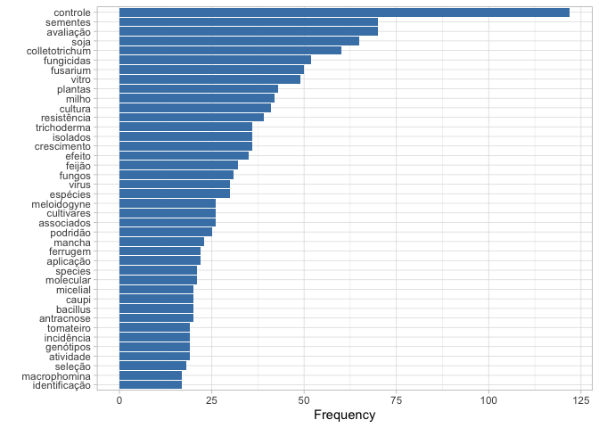
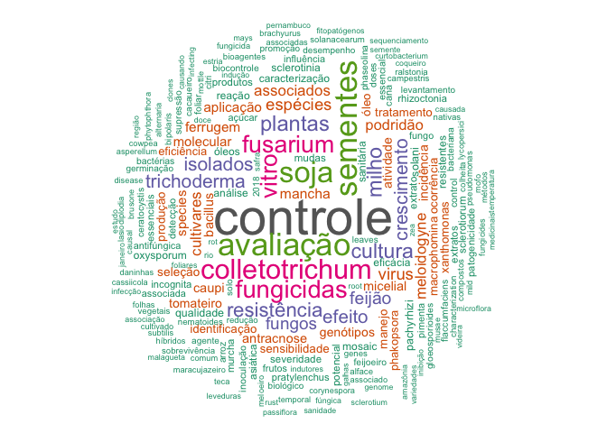

A short description of the post.
The scientific conference promoted by the Brazilian Society of Plant Pathology (SBF) is the primary venue for local scientists to present their research data. Among the different ways of delivering scientific content and receiving feedback, poster presentation is tradition and central at meetings. They might provide the largest amount of the least biased (not by invitation) information on the current and future status of research in the field. Most commonly, summaries of work presented in a conference are based on the number of abstracts per subarea or number of results from a keyword-based search. I have played with text analysis in a recent research article and thought it could be useful to identify the most frequent research areas to be presented at the 51CBFito meeting. I also wanted to learn new coding and, of course, share what I’ve learned.
I began looking for the data and found a PDF file with several pages in the preface and a list of poster titles organized by sessions. I was not succesful in extracting information from that file using pdftools package the way I would like to. I gave up using that source and asked the organizers if there was another format - different from a spreadsheet. They sent me a link to a webpage that mainly displays a two-column table with poster IDs and titles in Portuguese. This source worked much better and was a chance for me to learn about scraping (harvesting) data from webpages using the rvest package.
It was rather easy to follow the examples of codes on how to read data from a table in a webpage and store data in a list, which can to be converted to a dataframe.
library(rvest)
library(tidyverse)
cbfito <- read_html("http://cbfito2019.com.br/index.php?page=portugues") %>%
html_table() %>%
map_dfr(`[`, c("ID", "Título")) %>%
rename("title" = "Título") # rename column name to English
write_csv(cbfito, "cbfito.csv") # storing in csv file in case the URL breaks!
cbfito <- read_csv("cbfito.csv")
nrow(cbfito) # diplay the total number of posters## [1] 706Now that I got the titles of 706 posters, a tidy approach was used to analyse the text. The unnest_tokens() function allows to extract all words and store them in a new variable.
library(tidytext)
library(tidyr)
cbfito_words <- cbfito %>%
unnest_tokens(word, title)
head(cbfito_words)## # A tibble: 6 x 2
## ID word
## <chr> <chr>
## 1 ID 381 screening
## 2 ID 381 da
## 3 ID 381 atividade
## 4 ID 381 antifúngica
## 5 ID 381 in
## 6 ID 381 vitroThe dataframe contains the ID variable and a new one called word with the individual words. Let’s see if there is any numeric string. Rearranging data in the column by word variable is one solution.
cbfito_words %>%
arrange(word) %>%
head(10)## # A tibble: 10 x 2
## ID word
## <chr> <chr>
## 1 ID 263 1
## 2 ID 730 1
## 3 ID 791 1
## 4 ID 50 17
## 5 ID 249 19
## 6 ID 789 19
## 7 ID 53 2
## 8 ID 495 2004
## 9 ID 495 2014
## 10 ID 219 2016As we can see above there are some integers that I want to remove together with the entire ID column.
cbfito_words %>%
filter(!str_detect(word, "[0-10000]")) %>%
select(word)## # A tibble: 9,757 x 1
## word
## <chr>
## 1 screening
## 2 da
## 3 atividade
## 4 antifúngica
## 5 in
## 6 vitro
## 7 de
## 8 óleos
## 9 essenciais
## 10 sobre
## # … with 9,747 more rowsNow the dataframe is composed of a single column with all words in a different row. Let’s view the 20 most frequent words.
cbfito_words %>%
count(word, sort = TRUE) %>%
mutate(word = reorder(word, n)) %>%
head(20)## # A tibble: 20 x 2
## word n
## <fct> <int>
## 1 de 1159
## 2 em 263
## 3 da 249
## 4 do 214
## 5 no 185
## 6 e 167
## 7 of 141
## 8 in 129
## 9 a 127
## 10 controle 122
## 11 na 102
## 12 avaliação 70
## 13 sementes 70
## 14 soja 65
## 15 com 64
## 16 colletotrichum 60
## 17 spp 55
## 18 o 54
## 19 à 53
## 20 fungicidas 52The most frequent words in a language are called stop words. There are several of those both in Portuguese and in English, which I do not want them to appear in the analysis as I am interested in the more technical terms. To eliminate them, we need to find a list of stopwords. I found a few lists and picked this one set from this website that contains the highest number of stop words in Portuguese.
stopwords_pt <- read_csv(
file = "http://www.labape.com.br/rprimi/ds/stopwords.txt",
col_names = FALSE
)
names(stopwords_pt) <- "word"An easy way to remove all stopwords in both languages is using the anti_join function.
cbfito_words2 <- cbfito_words %>%
anti_join(stopwords_pt) %>%
anti_join(stop_words) # this is a list of English stopwords from the tidytext pkgLet’s have another close look at the list of words and check if there are some field-specific words that I want to eliminate.
cbfito_words2## # A tibble: 6,330 x 2
## ID word
## <chr> <chr>
## 1 ID 381 screening
## 2 ID 381 atividade
## 3 ID 381 antifúngica
## 4 ID 381 vitro
## 5 ID 381 óleos
## 6 ID 381 essenciais
## 7 ID 381 sobre
## 8 ID 381 fitopatógenos
## 9 ID 253 desempenho
## 10 ID 253 fungicidas
## # … with 6,320 more rowsI went through the list and could find a few unwanted words that are not of relevance for this summary. I did it manually considering that I had “only” 2,000 words, but I went through only those cited at least twice. The filter function can be used to eliminate those words from the list of words.
words_freq <- cbfito_words2 %>%
filter(!word %in% c(
"spp", "sp", "sob", "sobre", "pv", "uso", "diferentes", "estado", "sob", "brasil", "brazil", "doenças", "desenvolvimento", "soybean", "pós", "contra", "identification", "diversity", "formas", "hosts")) %>%
count(word, sort = TRUE) %>%
mutate(word = reorder(word, n))
words_freq## # A tibble: 2,136 x 2
## word n
## <fct> <int>
## 1 controle 122
## 2 avaliação 70
## 3 sementes 70
## 4 soja 65
## 5 colletotrichum 60
## 6 fungicidas 52
## 7 fusarium 50
## 8 vitro 49
## 9 plantas 43
## 10 milho 42
## # … with 2,126 more rowsThe barplot gives us an idea of the most common research interests based on the number of posters - assuming that one word is not repeated in the same poster title.
words_freq %>%
head(40) %>%
ggplot(aes(reorder(word, n), n))+
geom_col(fill = "steelblue")+
coord_flip()+
theme_light()+
labs(y = "Frequency", x = "")
Using barplots we have serious limitation in space. Also, it does not make sense to show too many words with just a few occurrences, for the case of a barplot. A nice solution for more crowded data is to produce a wordcloud. In the code below I defined a maximum of 200 words that appeared at least twice to be shown in the plot.
library(wordcloud)
library(RColorBrewer)
words_freq %>%
# filter(n > 5) %>%
with(wordcloud(word,
n,
scale = c(3.5, 0.4),
max.words = 200,
min.freq = 2,
random.order = FALSE,
rot.per = 0.40, colors=brewer.pal(8, "Dark2")))
To answer the original question, my analysis showed that most of the studies by Brazilian pathologists are focused on control methods by fungicides, host resistance or biological agentes (Trichoderma and Bacillus) both in the field and under in vitro conditions. The most studied crops are soybean, maize, common bean, cowpea and tomato and the most common diseases are caused by fungi (Colletotrichum, Fusarium) followed by nematodes (Meloidogyne) and viruses.
Text analysis is an interesting approach and could be expanded further to answer different questions should more information be available. For example, if each poster was associated with a specific session, that could be taken into account in the analysis. Maybe some kind of network analysis could be used to check which words tend to appear more frequently together (same study). For example, for which group of pathogen was identification more common. What are the most common control methods studied in soybean? are they the same for other crops? Trends in research over time could be identified should text data on presentations from previous conference be available.